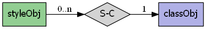

mapscript.styleObj¶
- class mapscript.styleObj(parent_class: classObj | None = None)¶
The STYLE object. An instance of styleObj is associated with one instance of
classObj.Overview
The styleObj has the following relationships:
Attributes
angledouble Angle, given in degrees, to draw the line work, default is 0, for symbols of Type HATCH, this is the angle of the hatched lines - see ANGLE
antialiasedint See ANTIALIAS
autoangleint If the angle is set to
AUTO- see ANGLEcolorgapdouble See GAP - moved from symbolObj in version 6.0
initialgapdouble See INITIALGAP
linecapint See LINECAP
linejoinint See LINEJOIN - moved from symbolObj in version 6.0
linejoinmaxsizedouble See LINEJOINMAXSIZE - moved from symbolObj in version 6.0
maxcolorcolorObjMaximum color in the COLORRANGEmaxscaledenomdouble See MAXSCALEDENOM
maxsizedouble Maximum pen or symbol width for scaling - see MAXSIZE
maxvaluedouble related to color ranges
maxwidthdouble Maximum width of the symbol - see MAXWIDTH
mincolorcolorObjMinimum color in the COLORRANGEminscaledenomdouble See MINSCALEDENOM
minsizedouble Minimum pen or symbol width for scaling styles - see MINSIZE
minvaluedouble related to color ranges
minwidthdouble Minimum width of the symbol - see MINWIDTH
offsetxdouble Draw with pen or symbol offset from map data, for shadows, hollow symbols, etc - see OFFSET
offsetydouble Draw with pen or symbol offset from map data, for shadows, hollow symbols, etc - see OFFSET
opacityint See OPACITY
outlinecolorcolorObjOutline pen color - see OUTLINECOLORoutlinewidthdouble See OUTLINEWIDTH
patternpattern : list Python Only
patternlengthint immutable Number of elements in the pattern attribute
polaroffsetangledouble Specified the angle - see POLAROFFSET
polaroffsetpixeldouble Specifies the radius/distance - see POLAROFFSET
rangeitemchar Attribute/field that stores the values for the Color Range Mapping - see RANGEITEM
rangeitemindexint The index of the range item - see RANGEITEM
refcountint immutable number of references to this object
sizedouble Pixel width of the style's pen or symbol - see SIZE
sizeunitsint Supersedes class's SIZEUNITS to allow fine-grained sizing for improved SLD (RFC 124)
symbolint The index within the map symbolset of the style's symbol - see SYMBOL
symbolnamechar immutable Name of the style's symbol - see symbolname
thisownThe membership flag
widthdouble Width refers to the thickness of line work drawn, in pixels - default is 1, for symbols of type
HATCH, the with is how thick the hatched lines are - see WIDTHMethods
- __init__(parent_class: classObj | None = None)[source]¶
Returns new default
styleObjinstance. Theparent_classis optional.
- clone() styleObj[source]¶
Return an independent copy of the style with no parent class.
Note
In the Java & PHP modules this method is named
cloneStyle.
- convertToString() char[source]¶
Saves the object to a string. Provides the inverse option for
styleObj.updateFromString()
- getBinding(binding: int) char[source]¶
Get the attribute binding for a specified style property. Returns NULL if there is no binding for this property.
- getGeomTransform() char[source]¶
Get the GEOMTRANSFORM for the style.
- removeBinding(binding: int) int[source]¶
Remove the attribute binding for a specified style property.
- setBinding(binding: int, item: char) int[source]¶
Remove the attribute binding for a specified style property.
- setGeomTransform(transform: char) void[source]¶
Set the GEOMTRANSFORM for the style.
- setSymbolByName(map: mapObj, symbolname: char) int[source]¶
Setting the symbol of the
styleObjgiven the reference of the map object and the symbol name.
- updateFromString(snippet: char) int[source]¶
Update a style from a string snippet. Returns
MS_SUCCESSorMS_FAILURE